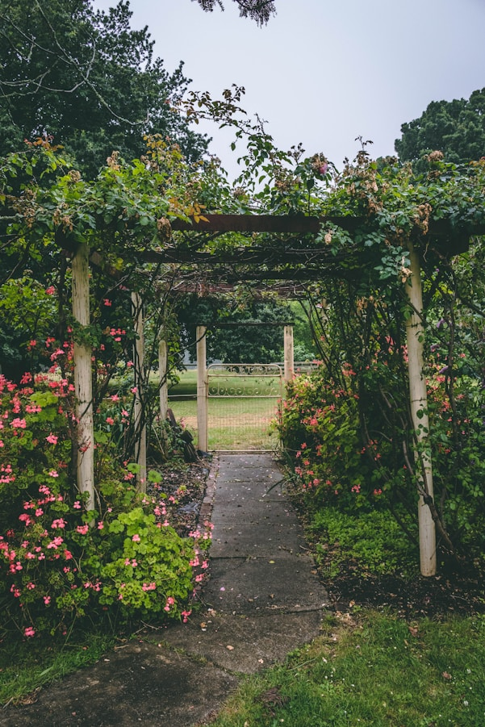

Observer avant d'agir : c'est la première règle. Sur un terrain en pente, la pluie ruisselle, emporte la terre fertile et file vers le bas sans jamais s'infiltrer. L'enjeu est donc de ralentir, répartir et infiltrer cette eau là où elle tombe.
Pour cela, l'un des aménagements les plus efficaces et les plus économiques reste la . Creusée à la main ou à la mini-pelle, elle suit patiemment les courbes du terrain.
Une fois l'eau ralentie et stockée dans le sol, la végétation reprend ses droits : les arbres s'enracinent plus profondément, les cultures résistent mieux à la sécheresse et la biodiversité revient naturellement.
Astuce : touchez les mots soulignés en pointillés pour afficher leur définition sans quitter votre lecture.
aussi appelée swale ou fossé d'infiltration
Fossé creusé le long des courbes de niveau pour ralentir, infiltrer et stocker l'eau de pluie dans le sol. Idéal pour reboiser et hydrater les cultures.
Sur un terrain en pente, une baissière intercepte l'eau de ruissellement et la laisse s'infiltrer lentement. Plutôt que de fuir en surface, l'eau recharge la nappe et reste disponible pour les plantes en période sèche.
Tout savoir pour concevoir et creuser votre baissière :
Fossé creusé le long des courbes de niveau pour ralentir, infiltrer et stocker l'eau de pluie dans le sol. Idéal pour reboiser et hydrater les cultures.